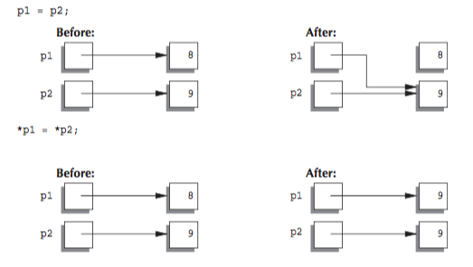
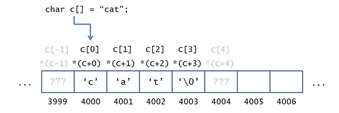
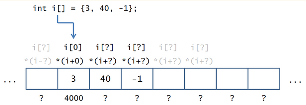

Getting the Point(ers)
A quick look at memory
- So far all variables we declared were allocated on the stack
- Stack variables live in scope
- Memory used for variables is "automatically" reclaimed when program goes out of scope
Pointers are different
- Allow flexibility in how much memory is used
- Programmer is in control and responsible for allocating and deallocating(freeing) memory
- A pointer is the memory address of a variable. It "points" to where the variable lives
- Even though a memory address is a number, you cannot store it in an int or double type
Why do we have pointers?
- Many C libraries used pointers to access memory directly
- Pointers can be used for typecasting. They can talk about types and classes in terms of other types and classes
- Make it easy to define complex data types like trees and linked lists
Lets look at an example
int pointedAt = 4;
int* pointer = &pointedAt; // make pointer point to the address of the variable pointed at
cout << *pointer << endl;// the pointer is "dereferenced" here. This is like saying print the value at the address pointer points to
To indicate a pointer, use * when declaring it.
To get the address of a local variable, use &.
Notice that the * operator has multiple uses. It can be used to declare a pointer type AND it can be used to "dereference" an address
What will the following code do?
int i = 21;
cout << *&i << endl;
#include <iostream>
#include <string>
using namespace std;
int main () {
int pointedAt = 444;
int* pointer = &pointedAt;
cout << "The value that pointer points at: "
<< *pointer << endl;
cout << "The address that pointer points at: "
<< pointer << endl;
cout << "The address where pointedAt is stored: "
<< &pointedAt << endl;
cout << "The address where pointer is stored: "
<< &pointer << endl;
}
/* Sample output. Notice the pointer has it's own address
The value that pointer points at: 444
The address that pointer points at: 0x7fff5fbff82c
The address where pointerAt is stored: 0x7fff5fbff82c
The address where pointer is stored: 0x7fff5fbff820
*/
Be careful when you are declaring pointers in list format.
#include <iostream>
#include <string>
using namespace std;
int main () {
// individually specify the type
int pointedAt, *ptr;
pointedAt = 111;
ptr = &pointedAt;
cout << *ptr << endl;
// In the following only p1 is a pointer. p2 and p3 are just regular ints
int* p1, p2, p3;
// when copying from pointer to pointer, do not need to use & operator
p1 = ptr;
cout << *p1 << endl;
}
// would this be the same as above?
int* pointedAt, *ptr;
#include <iostream>
#include <string>
using namespace std;
int main () {
// Variables to be pointed at
int i = 0;
double d = 3.3;
bool b;
// Pointers
// An integer pointer that points to the memory address
// at which int i is located
int* iPtr = &i;
// What's happening here?
double* dPtr = &*&d;
// Is this going to be a problem? If so, when?
bool* bPtr = &b;
// What's happening here?
*iPtr = 20;
// What's happening here?
*&*dPtr = 3.33;
b = (*iPtr % 2 == 0) || (*dPtr > 4);
cout << i << endl;
cout << *iPtr << endl;
cout << d << endl;
cout << *dPtr << endl;
cout << b << endl;
cout << *bPtr << endl;
}
Pointer Variables Used with =
If p1 and p2 are pointer variables, then the statement
p1 = p2;
changes the value of p1 so that it is the memory address (pointer) in p2. A common way to think of this is that the assignment will change p1 so that it points to the same thing to which p2 is currently pointing.

What if a pointer points to nothing?
Can we still set it's value?
#include <iostream>
#include <string>
using namespace std;
int main () {
int* ptr;
*ptr = 999;
cout << *ptr << endl;
}
You might not get a compile or syntax error, but your program might crash!
If your program doesn't crash, it will lead to undefined behavior and illegal memory accesses.
In Xcode, I get EXC_BAD_ACCESS
You can use the
nullptr keyword to represent the pointer that points to nothing
Using nullptr is safer because you are not pointing to random memory.
#include <iostream>
#include <string>
using namespace std;
int main () {
int* ptr = nullptr;
if(ptr != nullptr) {
cout << *ptr << endl;
}
}
You can even use an int pointer to point to an element in the array
#include <iostream>
#include <string>
using namespace std;
int main () {
int* ptr = nullptr;
int a[5] = {1, 2, 3, 4, 5};
// make ptr point to the address of the third element in the array
ptr = &a[3];
cout << *ptr << endl;
}
Notice something interesting about the way we got the address of the element in the array??
Could it be that the array identifiers are actually pointers? Then answer is YES!
The pointer points to the address of the FIRST element in the array.
We use bracket notation to get subsequent items. It is equivalent to saying dereference with offset.
If ptr points to the address of the first element then
ptr[offset] is equivalent to saying
*(ptr + offset)

What if we have an array of ints. Unlike chars ints take up 4 bytes of space

The offset in pointers scale to the size of the type.
Do the following compile? If so, What do they print?
#include <iostream>
#include <string>
#include <cstring>
using namespace std;
int main () {
char c[] = "cat";
char* helper = c;
int len = strlen(c);
for (int i = 0; i < len; i++) {
cout << helper[0] << endl;
helper++;
}
}
#include <iostream>
#include <string>
using namespace std;
int main () {
char c[] = "cat";
for (char* helper = c; *helper != '\0'; helper++) {
// What happens when we just print out c?
cout << helper << endl;
}
}
#include <iostream>
#include <string>
using namespace std;
int main () {
char c[] = "cat";
// Notice our new iterator increment...
for (char* helper = c; *helper != '\0'; helper = &helper[1]) {
cout << helper[0] << endl;
}
}
#include <iostream>
#include <string>
using namespace std;
int main () {
char c[] = "cat";
for (char* helper = c; *helper != '\0'; helper++) {
// What happens when we just print out c?
cout << *helper << endl;
}
}
Pointers and Functions
Now that we have pointers, we can do much more with functions
We can accept pointers with different notations
//Both i and p are pointer parameters
void pointerFunc (int* i, int p[]) {
...
}
#include <iostream>
#include <string>
#include <cstring>
using namespace std;
int* findInt1 (int arr[], int len, int match) {
for (int i = 0; i < len; i++) {
if (arr[i] == match) {
return &arr[i];
}
}
// Case where there is no match!
return nullptr;
};
// See the difference?
int* findInt2 (int* arr, int len, int match) {
for (int i = 0; i < len; i++) {
if (arr[i] == match) {
return &arr[i];
}
}
// Case where there is no match!
return nullptr;
};
int main () {
int i[] = {5, 6, 7, 8, 9};
int* ptr = findInt1(i, 5, 7);
if (ptr != nullptr) {
cout << *ptr << endl;
} else {
cout << "null!" << endl;
}
}
What will get printed?
#include <iostream>
#include <string>
using namespace std;
void addStuff(int *p) {
*p = *p + 12;
}
int main () {
int i = 3;
int* ptr = &i;
addStuff(ptr);
cout << i << endl;
}
If you pass a pointer to a function like in the example above, it pointer p in addStuff is a copy of ptr in main.
However ptr points to the address of i so the address is copied into p. When p changes the value it points to, it changes i because it points to i.
Is it possible to pass a
pointer to a function
by reference?
#include <iostream>
using namespace std;
void movePtr(int*& ptr) {
ptr = ptr + 2; // O_o'
}
int main() {
int arr[7] = {1,2,3,4,5,6,7};
int* ptr = arr;
cout << *ptr << endl;
movePtr(ptr);
cout << *ptr << endl;
movePtr(ptr);
cout << *ptr << endl;
}
One important thing to remember is that memory space for local variables is reclaimed after the function exits. if you set a pointer to a local variable, you will probably encounter undefined behavior.
#include <iostream>
#include <string>
using namespace std;
void voodoo(int*& p) {
int i = 123;
p = &i;
}
int main () {
int i1 = 10;
int* ptr = &i1;
voodoo(ptr);
cout << *ptr << endl; // ptr points to a location where values are subject to change
int arr[7] = {1,2,3,4,5,6,7};
cout << *ptr << endl; // its not the same!
}
Pointers Practice
- Write a function ptrsToMinMax that takes an array of ints, the size of the array, and two pointers by reference. It sets one of the pointers to the position of the min and the other to the position of the max. Set them to nullptrs if the array is empty or invalid size.
About Midterm 2
Midterm 2 will be next week. Be on the lookout for announcements.
Make sure you pick a time
Here are some midterm practice problems
1) Will the following compile? Why?
#include <iostream>
#include <string>
using namespace std;
int main () {
char c[] = "Testing";
string t = "Testing";
cout << (c == t) << endl;
}
#include <iostream>
#include <string>
#include <cstring>
using namespace std;
int main () {
char c[] = "Testing";
string t = "Testing";
cout << (strcmp(c, t)) << endl;
}
2) The following function works for some arguments but not all. What would be some unsafe arguments?
// Works just like substr for strings, except that the argument
// c is mutated to the substring instead of returning a new substr
void cstringSubstr (char c[], int start, int chars) {
int len = strlen(c);
// If the start pos is greater than the strlen, then
// just return the empty cstring
if (start >= len) {
c[0] = '\0';
return;
}
// Otherwise, start at the start index and keep copying
// the characters to the front of the cstring
for (int i = 0; i < chars; i++) {
c[i] = c[start + i];
}
// Don't forget to null terminate!
c[chars] = '\0';
}
Which of the below would be unsafe for the cstringSubstr function?
// A
char c[] = "testing";
cstringSubstr(c, 0, 5);
// B
char c[] = "testing";
cstringSubstr(c, 0, 7);
// C
char c[] = "testing\0";
cstringSubstr(c, 0, 8);
// D
char c[] = "test\0ing\0";
cstringSubstr(c, 1, 8);
// E
char c[] = "test";
cstringSubstr(c, 2, 6);
// F
char c[] = {'t', 'e', 's', 't'};
cstringSubstr(c, 0, 4);
// G
char c[] = {'t', 'e', 's', 't', '\0'};
cstringSubstr(c, 1, 4);
// H
char c[] = "";
cstringSubstr(c, 0, 1);
// I
char c[] = "\0";
cstringSubstr(c, 1, 1);
// J
char c[] = "\0";
cstringSubstr(c, 0, 2);